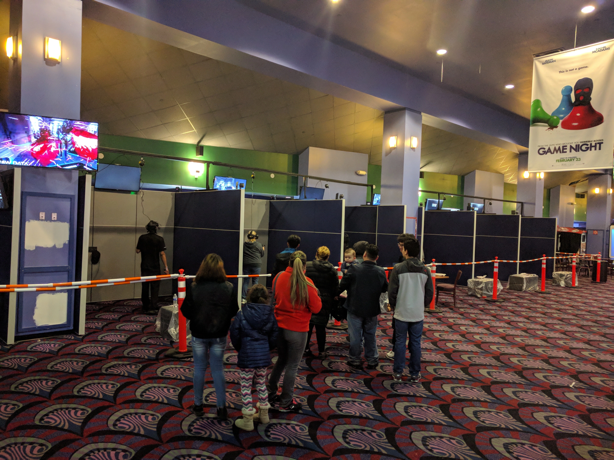
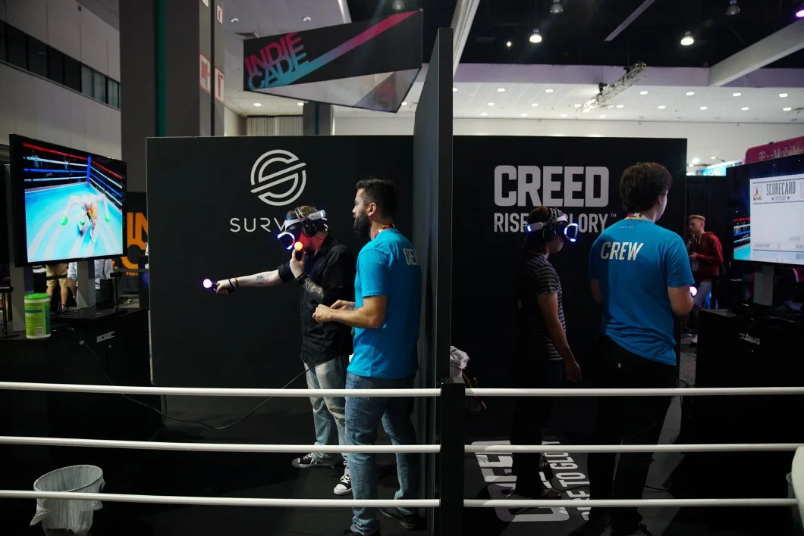
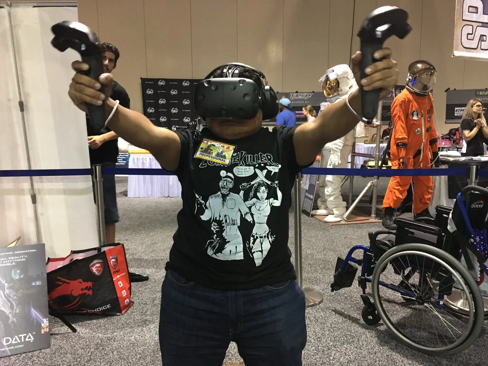
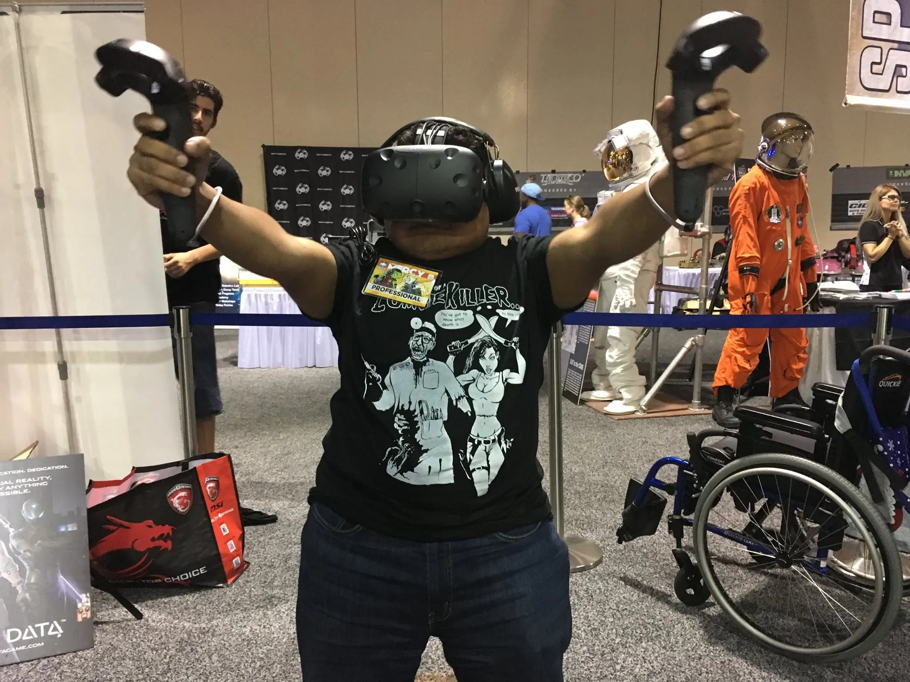

Combobulate Technology LLC Homepage
This site is under development and construction YMMV.
Combobulate Tech, we are here to combobulate the discombobulated!
Is your tech discombobulated?
Have your problems grown so Brobdingnagian that you don't know where to turn?
Reach out to Combobulate Technology today, our team of engineering voices can help.
We put the Liliputian back into problem.
Here at Combobulate Tech we (Royal) work with companies helping them with their technology needs. While Combobulate Tech is a new company, we have been consulting with businesses for a few decades now. Some of our clients include VR gaming studios, entertainment companies, movie theatres, and film production companies.
-
We have developed holographic displays to show off specialty content.
Hi res video
-
We have designed, deployed, and troubleshot complex VR setups for public and private events.
Hi res video
-
We have helped to design and build VR arcades around the world.



-
We have designed, built, and ran custom VR booths at some of the largest tech and gaming events in the world.
 


-
Assisted in reviewing network configs to identify and eliminate performance issues.
-
Develop custom IT solutions for complex problems, such as building custom SSD SAN solutions on a redundant 10 Gbps backbone linked back to VMware (iSCSI), or building a custom software deployment solution with granular control of every file on a global scale.
-
Designing, testing, and kitting thousands of custom electronics kits to be given out at conferences. Using those kits, we taught hundreds of people basic circuit designs. Troubleshooting and repairing custom arcade cabinet electronics.


- About Us
-
Blog Posts
-
DCDarknet Badge Instructions for DEFCON 32
(April 12, 2024)
Tags (Badge Life, DCDarknet, DEFCON, DEFCON 32, Hardware Hacking)
Teaching about basic electronics and building a DCDarknet badge for DEFCON 32. This is the wooden badge that is designed to teach basic electronics and circuit design.
-
DCDarknet Badge Instructions for DEFCON 32
(April 12, 2024)